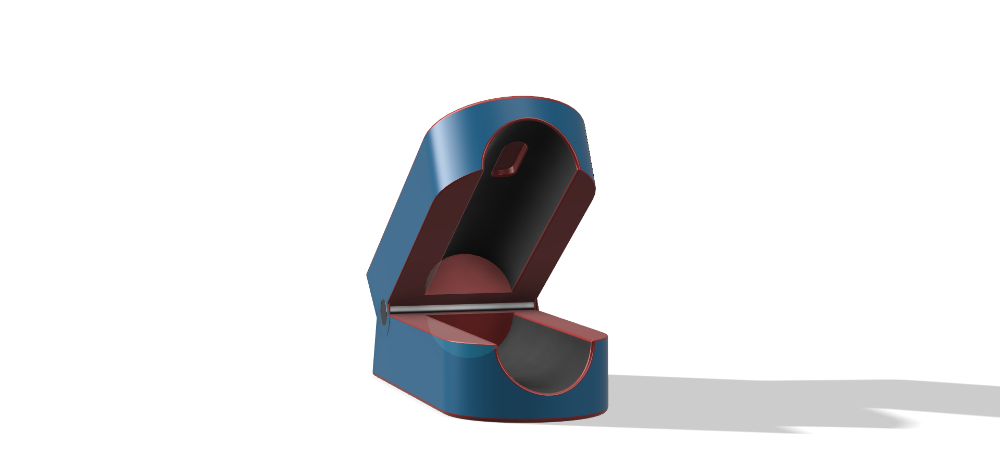
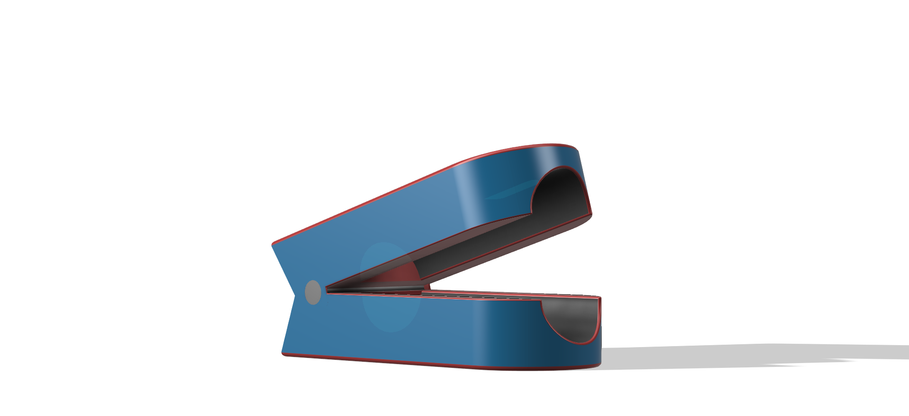

CAD PROJECT · 02
Pulse Oximeter
Medical Device Design

Designing a compact fingertip medical device.
Independently designed and modeled a fingertip pulse oximeter, focusing on ergonomic geometry, component interaction, and realistic medical device form.
The design uses a two-part hinged housing that opens around the user's finger while maintaining a compact, portable form factor.
Hinged Housing
Created separate upper and lower components connected by a functional revolute joint.
Finger Cavity
Shaped the internal geometry around the finger to create a compact and ergonomic device profile.
Product Geometry
Used drafted surfaces, split bodies, fillets, and chamfers to develop a smooth medical-device form.

